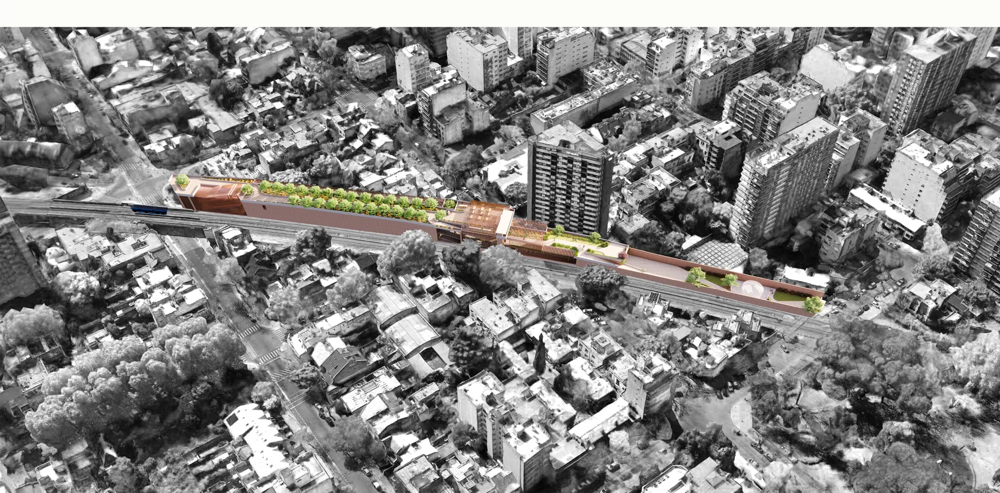
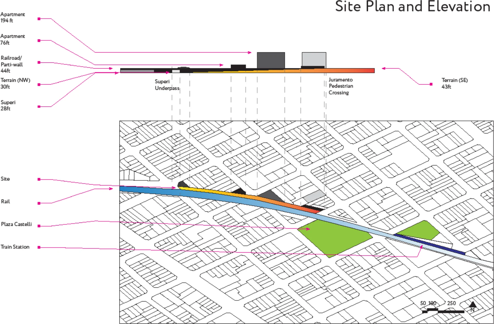
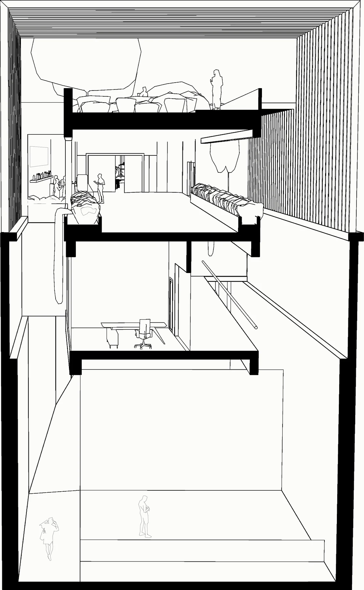
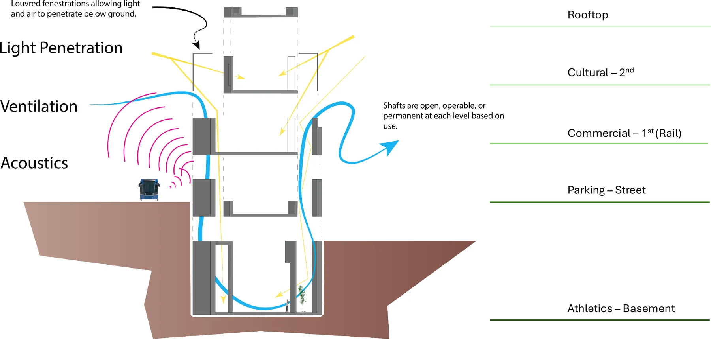
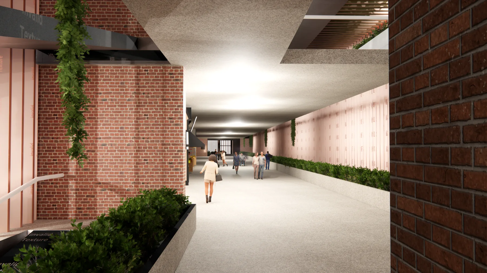
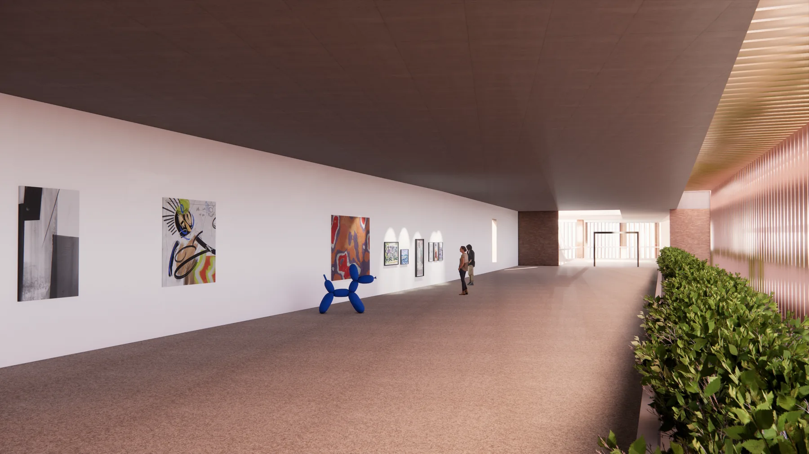
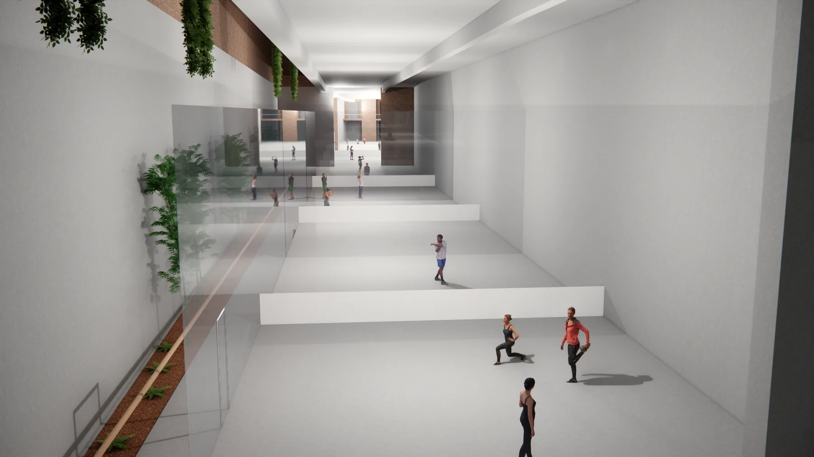
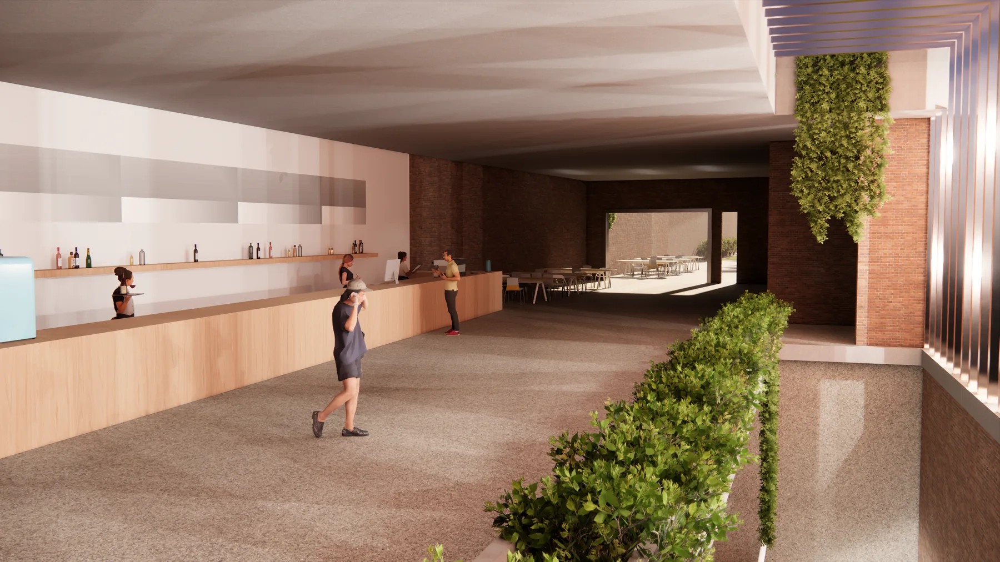
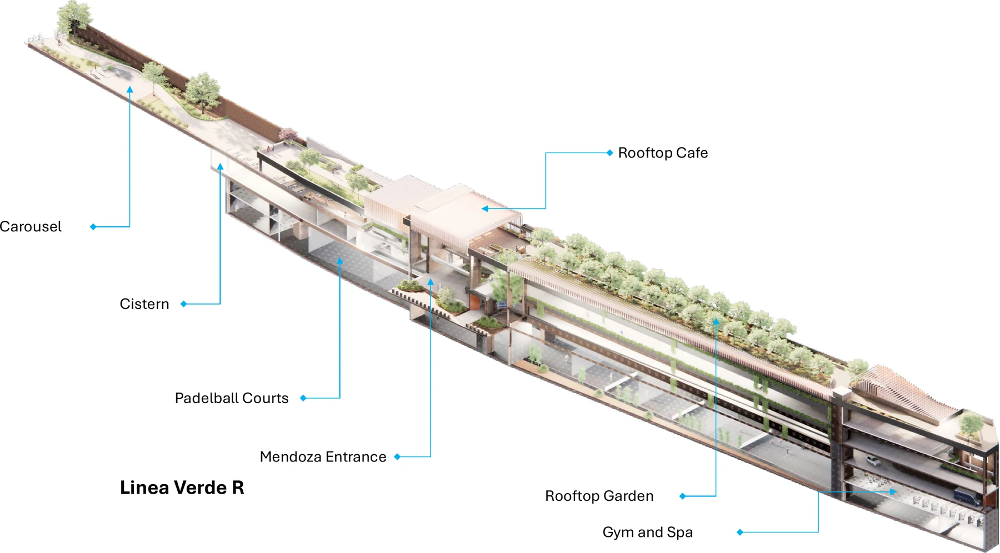

Línea Verde R
2025Deporte. Cultura. Paseo. A linear building laid along the rail cut in Belgrano R, Buenos Aires, stacking athletics, parking, commerce, and culture beneath a public roof garden.
- Type
- Graduate design studio — ARCH 571, Summer 2025
- Role
- Individual project
- Tools
- SketchUp · Enscape · LayOut · AutoCAD · Illustrator · Photoshop
- Program
- Mixed-use commercial and cultural complex, ~80,000 sq ft
- Status
- Completed studio project

The site is a strip of land beside the railway in Belgrano R, Buenos Aires, between the Superí underpass and the Juramento pedestrian crossing, one block from Plaza Castelli and a short walk from Estación Belgrano R. It belonged to the railway company until technological change made it surplus, and has since served as a surface parking lot — a leftover between the tracks and the neighborhood that grew up around them. An existing carousel building at the southeast corner is protected and stays. The strip is long, narrow, and steeply constrained: a 13 ft fall across its length, the railroad parti-wall at 44 ft, and neighboring apartment blocks rising to 76 ft and 194 ft.
The studio asked for a mixed-use commercial and cultural complex of roughly 80,000 sq ft: paddle courts, a flexible multimedia cultural space with 26 ft of clear height, stores and restaurants, a public park, and parking. Zoning caps the site at a floor-area ratio of 3.0 and six stories or 60 ft, with a 12 ft setback from the tracks. Three performance criteria governed — functionality, community, and sustainability — the last requiring a climate-responsive envelope worked hard enough that the building runs on daylight and natural ventilation through the working day.


Environmental analysis set the terms of the section. Electrified EMU trains pass every fifteen minutes at 80–85 dB; traffic on Olazábal and Superí reaches 1,000–1,500 vehicles per hour at peak, generating 70–80 dB. Acoustic insulation with vegetative and masonry barriers brings both below 55 dB. Sunlight arrives filtered from the north — solar elevation of roughly 79° at the summer solstice, 55° at the equinoxes, and 32° at the winter solstice. Prevailing wind runs east to northeast in spring and summer and southwest to southeast in autumn and winter, at 8.5 to 9.8 mph.
Program is stacked in five bands: athletics in the basement, parking and mechanical at street level, commercial at rail level, cultural space above it, and a garden on the roof. Because the lower floors sit below grade against a noise source, light and air are brought down through louvred fenestrations and a continuous run of shafts — held open, made operable, or sealed permanently at each level according to what that floor does. The same shafts double as the acoustic strategy, keeping the rail-facing side buffered while the north side stays glazed to filtered light.

Three entrances hold the length of the building. Juramento opens to the Elsa carousel and a patio with a green roof above it. Conde-Mendoza and Superí each pair a pedestrian lobby with a vehicle exit closed by a copper screen door. All three carry restrooms, a stairwell, and an elevator reaching every floor, so the building can be entered and crossed at any point along the corridor rather than only at its ends.




Five levels inside the 60 ft envelope carry a public program the barrio otherwise has no room for. Below grade are a gym, spa, and six paddleball courts lit by a skylit subterranean garden. Street level absorbs parking, mechanical plant, and operations offices with atria at Superí and Conte. Rail level holds a market arcade, cafe, and dining patio opening onto Carousel Park. The cultural floor above runs uninterrupted from the Mendoza entrance to an exterior event space. The roof is given back as garden, cafe, and paseo — the length of the corridor walked in the open, over the tracks it was built to cover.
